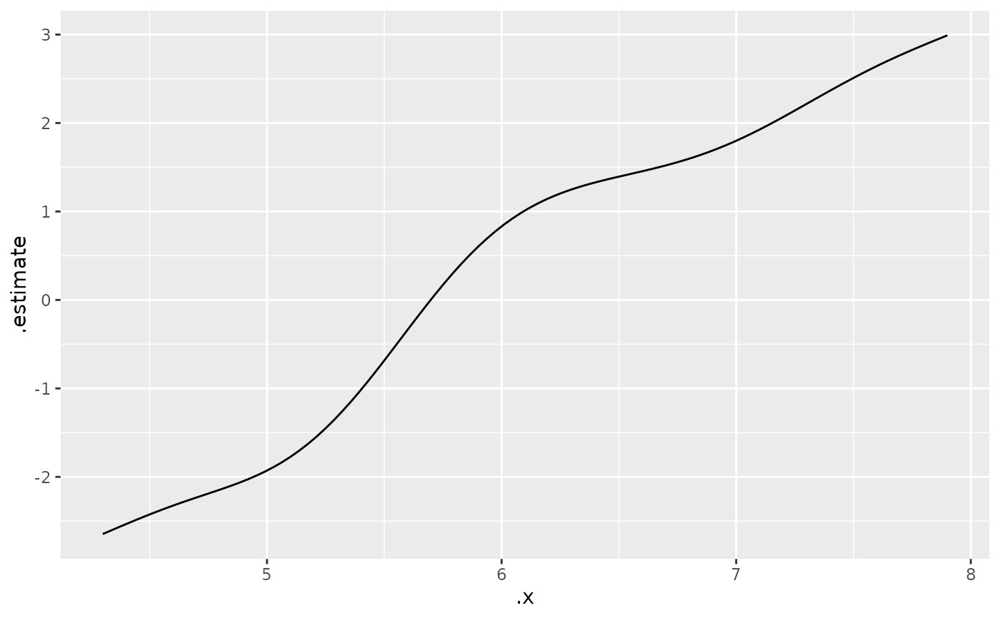

Extract a variable's effect from a model as a tidy data frame
Source:R/brt.R, R/effect_estimates.R
effect_estimates.RdThe one place in the package that knows anything about model classes. Everything downstream – the transforms, the ribbon, the rug, the panel arranging – works off the standardized frame this returns, so adding support for a new kind of model means writing a method here and nothing else.
Usage
# S3 method for class 'gbm'
effect_estimates(
model,
var,
scale = c("auto", "link", "response"),
interval = c("auto", "se", "ci", "cri"),
level = 0.95,
n = 100,
data = NULL,
n.trees = NULL,
...
)
effect_estimates(
model,
var,
scale = c("auto", "link", "response"),
interval = c("auto", "se", "ci", "cri"),
level = 0.95,
n = 100,
data = NULL,
...
)
# S3 method for class 'gam'
effect_estimates(
model,
var,
scale = c("auto", "link", "response"),
interval = c("auto", "se", "ci", "cri"),
level = 0.95,
n = 100,
...
)
# S3 method for class 'scam'
effect_estimates(
model,
var,
scale = c("auto", "link", "response"),
interval = c("auto", "se", "ci", "cri"),
level = 0.95,
n = 100,
...
)
# S3 method for class 'gamm4'
effect_estimates(model, var, ...)
# S3 method for class 'gamm'
effect_estimates(model, var, ...)
# Default S3 method
effect_estimates(
model,
var,
scale = c("auto", "link", "response"),
interval = c("auto", "se", "ci", "cri"),
level = 0.95,
n = 100,
data = NULL,
re.form = NA,
...
)Arguments
- model
A fitted model.
- var
Name of the predictor whose effect to extract, as a string.
- scale
"auto"(the default),"link", or"response"."auto"resolves to whichever is natural for the backend –"link"for a GAM partial effect,"response"for predictions. See Details: for GAMs this chooses between two genuinely different quantities, not two axis scales.- interval
"auto"(the default),"se"for a+/- 1standard error ribbon, or"ci"for an interval atlevel."auto"gives a pointwise interval atlevel, 95% by default."cri"is another name for"ci".- level
Interval level, used when
interval = "ci".- n
Number of points at which to evaluate the effect.
- data
Optional data frame to take the predictor's range from, for models that do not keep the data they were fitted on – a
gbm, for instance.plotEffects()passes thedatit was given.- n.trees
For a boosted regression tree, how many trees to use. Defaults to every tree in the fit, which is rarely what you want – pass the number
gbm::gbm.perf()selected.- ...
Passed to the underlying backend (
gratia::smooth_estimates()ormarginaleffects::predictions()).- re.form
For a mixed model, which random effects to include.
NA(the default) gives the population-level effect;NULLincludes all of them. Not forwarded to models without random effects, which would reject it. Note that standard errors cover the fixed effects only either way.
Value
A data frame with four columns – .x, .estimate, .lower,
.upper – and a "quantity" attribute naming what was computed, which
plotEffects() uses to label the y axis.
Details
Exported both because the tidy frame is useful on its own, and so support
for further model classes can be added from outside the package by writing
an effect_estimates() method.
Two backends, because the two quantities they produce are not the same thing:
GAMs on the link scale go to
gratia::smooth_estimates(), which returns the partial effect of the smooth: the term's own contribution, centered so it averages to zero, with the rest of the model excluded. This is what this package drew before it handled anything but GAMs.Everything else goes to
marginaleffects::predictions(), which returns predicted values – the model's actual fitted output asvarvaries, with the other predictors held at representative values (means for numeric predictors, modes for factors).
A centered partial effect has no meaningful back-transformation to the
response scale on its own, so asking a GAM for scale = "response" gives you
predictions rather than an incoherent partial effect. The returned frame
carries a "quantity" attribute recording which of the two you got, and
plotEffects() uses it to label the y axis honestly.
See also
plotEffects(), which turns this into a plot.
Examples
gam.fit <- mgcv::gam(Petal.Length ~ s(Sepal.Length), data = iris)
est <- effect_estimates(gam.fit, "Sepal.Length")
head(est)
#> .x .estimate .lower .upper
#> 1 4.300000 -2.645897 -3.375673 -1.916120
#> 2 4.336364 -2.604524 -3.268209 -1.940838
#> 3 4.372727 -2.563376 -3.165252 -1.961500
#> 4 4.409091 -2.522677 -3.068292 -1.977062
#> 5 4.445455 -2.482648 -2.978645 -1.986651
#> 6 4.481818 -2.443499 -2.897256 -1.989742
attr(est, "quantity")
#> [1] "Partial Effect"
# The same call against a model of any other class
lm.fit <- lm(Petal.Length ~ Sepal.Length + Species, data = iris)
head(effect_estimates(lm.fit, "Sepal.Length"))
#> .x .estimate .lower .upper
#> 1 4.300000 1.015730 0.9154375 1.116023
#> 2 4.336364 1.038716 0.9404064 1.137026
#> 3 4.372727 1.061702 0.9653081 1.158096
#> 4 4.409091 1.084688 0.9901385 1.179237
#> 5 4.445455 1.107674 1.0148933 1.200454
#> 6 4.481818 1.130659 1.0395681 1.221751
# Useful on its own if you would rather build the plot yourself
ggplot2::ggplot(est, ggplot2::aes(.data$.x, .data$.estimate)) +
ggplot2::geom_line()
